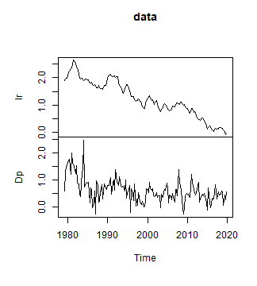
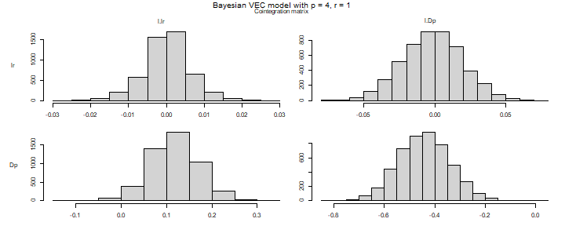
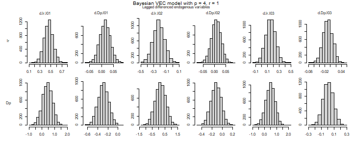
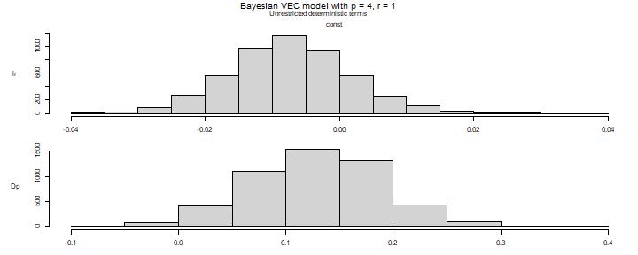
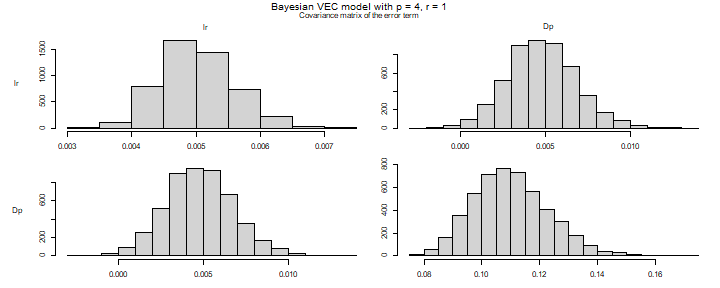
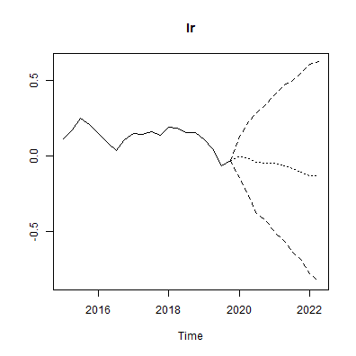
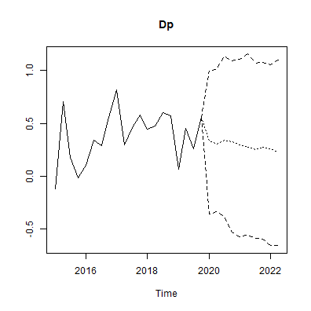
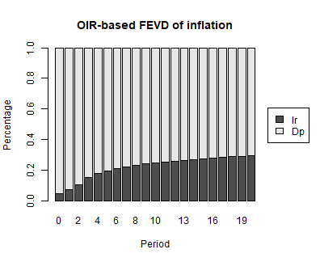

Bayesian Error Correction Models with Priors on the Cointegration Space
Franz X. Mohr
Source:vignettes/bvec.Rmd
bvec.RmdIntroduction
This vignette provides the code to set up and estimate a Bayesian
vector error correction (BVEC) model with the bvartools
package. The presented Gibbs sampler is based on the approach of Koop et
al. (2010), who propose a prior on the cointegration space. The
estimated model has the following form
where with cointegration rank , and contains deterministic terms. For an introduction to vector error correction models see https://www.r-econometrics.com/timeseries/vecintro/.
Data
To illustrate the workflow of the analysis, the Austrian long-term
interest rate (lr) and inflation (Dp) are
taken from data set at_macrodata, both in percent per
quarter from 1979Q2 to 2019Q4. The series are seasonally adjusted, so
that
contains only an intercept.
library(bvartools)
data("at_macrodata")
data <- window(at_macrodata[["domestic"]][, c("lr", "Dp")], end = c(2019, 4)) * 100
plot(data) # Plot the series
plot of chunk data
The create_bvecmodel function produces an object of
class bvecmodel, where the element data$train
contains the data matrices y, w and
x for the BVEC estimator, where y is the
matrix of dependent variables, w is a matrix of potentially
cointegrated regressors, and x is the matrix of
non-cointegration regressors.
object <- create_bvecmodel(data, p = 4, r = 1,
const = "unrestricted",
iterations = 5000, burnin = 1000)Argument p represents the lag order of the VAR form of
the model and r is the cointegration rank of
Pi. Function create_bvecmodel requires to
specify the inclusion of intercepts, trends and seasonal dummies
separately. This allows to decide on whether they enter the
cointegration term ("restricted") or the non-cointegration
part ("unrestricted") of the model.
Models such as the one proposed in Koop, Leon-Gonzalez and Strachan
(2010) put a restriction on the space spanned by
.
This means, that the scale of the variables in the error correction term
becomes important. A reasonable approach to handle this, is to rescale
the series in the error correction term. Function
scale_error_correction_term can be used for this purpose.
It rescales all non-deterministic elements by their respective
differenced series’ standard deviation. If
object[["data"]][["train"]][["w"]] contains a column named
trend, its valus are replaced by
.
object <- scale_error_correction(object)Priors
Function add_priors adds the necessary prior
specifications to object object. For the current
application non-informative priors are used:
object <- add_priors(object,
coef = list(v_i = 0, v_i_det = 0),
coint = list(v_i = 0, p_tau_i = 1),
sigma = list(df = 1, scale = .0001))Adding initial values
Function add_initial_values generates of first draws of
the Gibbs sampler for the specified model(s) in object
model and augments the object accordingly.
object <- add_initial_values(object, method = "maxlik")Estimation
User-specific algorithm
The following code produces posterior draws using the algorithm described in Koop et al. (2010).
# Reset random number generator for reproducibility
set.seed(7654321)
# Obtain data matrices
y <- t(object[["data"]][["train"]][["y"]])
w <- t(object[["data"]][["train"]][["w"]])
x <- t(object[["data"]][["train"]][["x"]])
r <- object[["model"]][["rank"]] # Set rank
tt <- ncol(y) # Number of observations
k <- nrow(y) # Number of endogenous variables
k_w <- nrow(w) # Number of regressors in error correction term
k_x <- nrow(x) # Number of differenced regressors and unrestrictec deterministic terms
k_gamma <- k * k_x # Total number of non-cointegration coefficients
k_alpha <- k * r # Number of elements in alpha
k_beta <- k_w * r # Number of elements in beta
# Priors
a_mu_prior <- object[["priors"]][["a"]][["mu"]] # Prior means
a_v_i_prior <- object[["priors"]][["a"]][["v_inv"]] # Inverse of the prior covariance matrix
v_i <- object[["priors"]][["beta"]][["v_inv"]]
p_tau_i <- object[["priors"]][["beta"]][["p_tau_inv"]]
sigma_df_prior <- object[["priors"]][["u_sigma"]][["df"]] # Prior degrees of freedom
sigma_scale_prior <- object[["priors"]][["u_sigma"]][["scale"]] # Prior covariance matrix
sigma_df_post <- tt + sigma_df_prior + r # Posterior degrees of freedom (Koop et al., 2010, eq. 8)
# Initial values
beta <- object[["initial"]][["beta"]]
sigma_i <- object[["initial"]][["u_sigma_inv"]]
g_i <- sigma_i
iterations <- object[["model"]][["iterations"]] # Number of iterations of the Gibbs sampler
burnin <- object[["model"]][["burnin"]] # Number of burn-in draws
draws <- iterations + burnin # Total number of draws
# Data containers
draws_alpha <- matrix(NA, k_alpha, iterations)
draws_beta <- matrix(NA, k_beta, iterations)
draws_pi <- matrix(NA, k * k_w, iterations)
draws_gamma <- matrix(NA, k_gamma, iterations)
draws_sigma <- matrix(NA, k^2, iterations)
# Start Gibbs sampler
for (draw in 1:draws) {
# Draw conditional mean parameters
temp <- post_coint_kls(y = y, beta = beta, w = w, x = x, sigma_i = sigma_i,
v_i = v_i, p_tau_i = p_tau_i, g_i = g_i,
gamma_mu_prior = a_mu_prior,
gamma_v_i_prior = a_v_i_prior)
alpha <- temp[["alpha"]]
beta <- temp[["beta"]]
Pi <- temp[["Pi"]]
gamma <- temp[["Gamma"]]
# Draw variance-covariance matrix
u <- y - Pi %*% w - matrix(gamma, k) %*% x
sigma_scale_post <- solve(tcrossprod(u) + v_i * alpha %*% tcrossprod(crossprod(beta, p_tau_i) %*% beta, alpha))
sigma_i <- matrix(rWishart(1, sigma_df_post, sigma_scale_post)[,, 1], k)
sigma <- solve(sigma_i)
# Update g_i
g_i <- sigma_i
# Store draws
if (draw > burnin) {
draws_alpha[, draw - burnin] <- alpha
draws_beta[, draw - burnin] <- beta
draws_pi[, draw - burnin] <- Pi
draws_gamma[, draw - burnin] <- gamma
draws_sigma[, draw - burnin] <- sigma
}
}The bvec function can be used to collect output of the
above Gibbs sampler in a standardized object of class
bvecmodel, which can be used further for forecasting,
impulse response analysis or forecast error variance decomposition. The
error correction term is described by the draws of alpha
and beta and not by those of Pi, since the
latter cannot be decomposed into the former.
# Number of non-deterministic coefficients
k_nondet <- (k_x - 1) * k
# Generate bvecmodel object
bvec_est <- bvec(y = object[["data"]][["train"]][["y"]],
w = object[["data"]][["train"]][["w"]],
x = object[["data"]][["train"]][["x"]][, 1:6],
x_d = object[["data"]][["train"]][["x"]][, -(1:6), drop = FALSE],
r = 1,
alpha = draws_alpha,
beta = draws_beta,
Gamma = draws_gamma[1:k_nondet,],
C = draws_gamma[(k_nondet + 1):nrow(draws_gamma),],
Sigma = draws_sigma)The draws were obtained from the rescaled error correction term, so
they refer to the rescaled series in w. Function
rescale_error_correction undoes the transformation of
scale_error_correction: it puts the series in
object$data$train$w back on the scale of the input data and
multiplies the draws of beta by the inverse of the scaling
factors. The draws of alpha are not affected, because the
error correction term of the estimated model is
,
where
is the diagonal matrix of scaling factors.
bvec_est <- rescale_error_correction(bvec_est)This step is required before the model is used any further. Functions
such as vec_to_var recover the levels of the endogenous
variables from the differences in y and their lags in
w, which is only possible if both are on the same
scale.
Obtain point estimates of cointegration variables:
beta <- bvec_est[["posterior"]][["beta"]][["coeffs"]] # Obtain draws of beta
beta <- apply(beta / beta[, 1], 2, median) # Normalise and obtain medians
beta <- matrix(beta, k_w) # Transform vector into a matrix
beta <- round(beta, 3) # Round values
dimnames(beta) <- list(dimnames(w)[[1]], NULL) # Rename matrix dimensions
beta # Print
#> [,1]
#> l.lr 1.00
#> l.Dp -3.73Posterior draws can be inspected with plot. Note that
the coefficients of the error correction term are displayed as draws of
Pi, i.e. as the product of alpha and
beta, since the two matrices are only identified up to a
rotation.
plot(bvec_est)
plot of chunk histograms

plot of chunk histograms

plot of chunk histograms

plot of chunk histograms
Obtain summaries of posterior draws
summary(bvec_est)
#>
#> Bayesian VEC model with p = 4
#>
#> Endogenous variables: lr, Dp
#>
#> Variable: lr
#>
#> Mean SD Naive SD Time-series SD 2.5%
#> l.lr 0.0001825788 0.005977652 8.453677e-05 8.453677e-05 -0.012610067
#> l.Dp -0.0016968564 0.020972732 2.965992e-04 2.965992e-04 -0.042542231
#> d.lr.l01 0.4577010448 0.083269057 1.177602e-03 1.177602e-03 0.294385225
#> d.Dp.l01 0.0143546544 0.021849947 3.090049e-04 3.170803e-04 -0.028898021
#> d.lr.l02 -0.2179818548 0.089660187 1.267987e-03 1.267987e-03 -0.395582474
#> d.Dp.l02 0.0068847287 0.021429976 3.030656e-04 3.030656e-04 -0.036198934
#> d.lr.l03 0.1535707693 0.082840719 1.171545e-03 1.171545e-03 -0.009668422
#> d.Dp.l03 -0.0092368676 0.017374998 2.457196e-04 2.457196e-04 -0.042910035
#> const -0.0073756151 0.009003408 1.273274e-04 1.307729e-04 -0.024747951
#> 50% 97.5%
#> l.lr 0.0002075414 0.01220411
#> l.Dp -0.0014738981 0.03908726
#> d.lr.l01 0.4578164848 0.62765436 *
#> d.Dp.l01 0.0141436942 0.05786029
#> d.lr.l02 -0.2178561183 -0.04196355 *
#> d.Dp.l02 0.0070069368 0.04837425
#> d.lr.l03 0.1529288713 0.31753988
#> d.Dp.l03 -0.0093650453 0.02396882
#> const -0.0075246690 0.01082975
#>
#> Variable: Dp
#>
#> Mean SD Naive SD Time-series SD 2.5%
#> l.lr 0.11775262 0.05242674 0.0007414261 0.001362671 0.01280708
#> l.Dp -0.44187723 0.10204966 0.0014432001 0.001510620 -0.63995737
#> d.lr.l01 0.43812806 0.38682538 0.0054705369 0.005802902 -0.33626216
#> d.Dp.l01 -0.28791521 0.10423246 0.0014740695 0.001597662 -0.49124246
#> d.lr.l02 0.14555264 0.41643397 0.0058892657 0.005889266 -0.66666682
#> d.Dp.l02 -0.12033147 0.09901879 0.0014003371 0.001522175 -0.31638853
#> d.lr.l03 0.49341818 0.38754053 0.0054806507 0.005606035 -0.29540357
#> d.Dp.l03 0.01054857 0.07979389 0.0011284561 0.001185902 -0.14592865
#> const 0.12822981 0.06019166 0.0008512387 0.001834890 0.00965563
#> 50% 97.5%
#> l.lr 0.11810947 0.22233755 *
#> l.Dp -0.44277085 -0.23931870 *
#> d.lr.l01 0.44031128 1.17627770
#> d.Dp.l01 -0.28728349 -0.08439446 *
#> d.lr.l02 0.14524083 0.96768442
#> d.Dp.l02 -0.11916327 0.07469555
#> d.lr.l03 0.50143273 1.23669549
#> d.Dp.l03 0.01018213 0.16865346
#> const 0.12933228 0.24556291 *
#>
#> Variance-covariance matrix:
#>
#> Mean SD Naive SD Time-series SD 2.5%
#> lr_lr 0.005023104 0.0005728622 8.101495e-06 8.595557e-06 0.004015525
#> lr_Dp 0.004788337 0.0019967006 2.823761e-05 2.911296e-05 0.001004862
#> Dp_Dp 0.110003851 0.0129793705 1.835560e-04 1.903590e-04 0.087269417
#> 50% 97.5%
#> lr_lr 0.004982629 0.006258252 *
#> lr_Dp 0.004754771 0.008957543 *
#> Dp_Dp 0.109124107 0.137206974 *Default algorithm
As an alternative to a user-specific algorithm, function
add_posterior_coefficients can be used to estimate such a
model as well:
bvec_est <- add_posterior_coefficients(object)
bvec_est <- rescale_error_correction(bvec_est)A prior centred on the maximum likelihood estimate
The prior used above is uniform on the cointegration space. That is
not a consequence of p_tau_i = 1 alone: the sampler uses
v_i and p_tau_i only through their product, so
with v_i = 0 the prior on the space is uniform whatever
p_tau_i is. An informative prior on the space needs a
positive v_i.
A natural centre for such a prior is the space spanned by Johansen’s
(1995) maximum likelihood estimate of
.
With coint = list(p_tau_i = "ml"), add_priors
builds
so that, given
,
the prior on how far
tilts away from that space is the sampling distribution of the estimator
itself, with its precision multiplied by weight. With
weight = 1 the prior adds as much information about the
space as the sample holds. With v_i = "ml" the shrinkage of
the loadings is set from their maximum likelihood estimate as well, so
that it is weak on the scale the data put them on.
Because the prior is built from Johansen’s estimate on the series as
they are stored in the model, it moves with the units of the error
correction term, and scaling the series makes practically no difference
to the posterior. The model below is therefore estimated without
scale_error_correction, and consequently without
rescale_error_correction. If the series are scaled, that
has to happen before add_priors, which is enforced.
object_ml <- create_bvecmodel(data, p = 4, r = 1,
const = "unrestricted",
iterations = 5000, burnin = 1000)
object_ml <- add_priors(object_ml,
coef = list(v_i = 0, v_i_det = 0),
coint = list(v_i = "ml", p_tau_i = "ml", weight = 1),
sigma = list(df = 1, scale = .0001))
set.seed(7654321)
object_ml <- add_initial_values(object_ml, method = "maxlik")
bvec_ml <- add_posterior_coefficients(object_ml)The posterior median of the normalised cointegration vector stays close to that under the uniform prior, while its credible interval narrows:
beta_ratio <- function(object) {
draws <- object[["posterior"]][["beta"]][["coeffs"]]
quantile(draws[, 2] / draws[, 1], c(0.05, 0.25, 0.5, 0.75, 0.95))
}
round(rbind("Uniform prior" = beta_ratio(bvec_est),
"ML prior, weight = 1" = beta_ratio(bvec_ml)), 3)
#> 5% 25% 50% 75% 95%
#> Uniform prior -8.886 -4.798 -3.73 -3.033 -2.337
#> ML prior, weight = 1 -6.538 -4.437 -3.73 -3.213 -2.653Since the centre is estimated from the same sample that the model is
estimated on, the data enter twice, and the posterior overstates the
precision of the cointegration space. Smaller values of
weight reduce this. The prior is most useful where the
likelihood alone is weakly informative about the space, for example in
short samples or in larger systems.
Evaluation
Posterior draws can be thinned with function thin:
bvec_est <- thin(bvec_est, thin = 5)The function vec_to_var can be used to transform the VEC
model into a VAR in levels:
bvar_form <- vec_to_var(bvec_est)The output of vec_to_var is an object of class
bvarmodel for which summary statistics, forecasts, impulse
responses and variance decompositions can be obtained in the usual
manner using summary, predict,
irf and fevd, respectively.
summary(bvar_form)
#>
#> Bayesian VAR model with p = 4
#>
#> Endogenous variables: lr, Dp
#>
#> Variable: lr
#>
#> Mean SD Naive SD Time-series SD 2.5%
#> lr.l1 1.462599600 0.080820996 0.0025557843 0.0025557843 1.30481438
#> Dp.l1 0.012824849 0.017808919 0.0005631675 0.0005631675 -0.02133806
#> lr.l2 -0.678378488 0.140281197 0.0044360810 0.0044360810 -0.95878251
#> Dp.l2 -0.007966878 0.018494222 0.0005848387 0.0005848387 -0.04631004
#> lr.l3 0.367033627 0.141654060 0.0044794947 0.0046471334 0.09628782
#> Dp.l3 -0.016042264 0.017226162 0.0005447391 0.0005447391 -0.05128174
#> lr.l4 -0.150961444 0.085026646 0.0026887786 0.0026887786 -0.31248327
#> Dp.l4 0.009305158 0.017703947 0.0005598480 0.0005598480 -0.02400289
#> const -0.007043664 0.009281895 0.0002935193 0.0002935193 -0.02570191
#> 50% 97.5%
#> lr.l1 1.463401020 1.61340695 *
#> Dp.l1 0.012691205 0.04681266
#> lr.l2 -0.677749733 -0.41485909 *
#> Dp.l2 -0.008298157 0.02778638
#> lr.l3 0.368067215 0.63774794 *
#> Dp.l3 -0.015945994 0.01560968
#> lr.l4 -0.154416913 0.01746967
#> Dp.l4 0.009041098 0.04341347
#> const -0.007318650 0.01293934
#>
#> Variable: Dp
#>
#> Mean SD Naive SD Time-series SD 2.5%
#> lr.l1 0.552796238 0.38736068 0.012249420 0.012249420 -0.231888691
#> Dp.l1 0.270377466 0.08402577 0.002657128 0.002657128 0.107633205
#> lr.l2 -0.268056246 0.67276253 0.021274619 0.022295633 -1.513490049
#> Dp.l2 0.166112082 0.08262415 0.002612805 0.002612805 0.012370406
#> lr.l3 0.314862189 0.66809496 0.021127018 0.023902425 -1.036239140
#> Dp.l3 0.130134180 0.08475347 0.002680140 0.002680140 -0.043822394
#> lr.l4 -0.481880412 0.38308357 0.012114166 0.012114166 -1.189827100
#> Dp.l4 -0.006325407 0.07950592 0.002514198 0.002514198 -0.164666953
#> const 0.126567083 0.06053786 0.001914375 0.002288643 0.005410348
#> 50% 97.5%
#> lr.l1 0.563187121 1.2829013
#> Dp.l1 0.271963008 0.4435749 *
#> lr.l2 -0.256548228 1.0647335
#> Dp.l2 0.163842347 0.3258942 *
#> lr.l3 0.317168263 1.5360571
#> Dp.l3 0.131251672 0.2912849
#> lr.l4 -0.482048761 0.2781547
#> Dp.l4 -0.005480403 0.1421538
#> const 0.128631500 0.2378494 *
#>
#> Variance-covariance matrix:
#>
#> Mean SD Naive SD Time-series SD 2.5%
#> lr_lr 0.005053278 0.0005778293 1.827257e-05 2.076231e-05 0.004044300
#> lr_Dp 0.004830382 0.0019254094 6.088679e-05 6.088679e-05 0.001248062
#> Dp_Dp 0.109785522 0.0127504598 4.032049e-04 4.032049e-04 0.086722605
#> 50% 97.5%
#> lr_lr 0.005019660 0.006301431 *
#> lr_Dp 0.004790763 0.008740513 *
#> Dp_Dp 0.109157311 0.137814253 *Forecasts
bvar_form <- add_forecast_input(bvar_form, n_ahead = 10)
bvar_form <- add_posterior_forecasts(bvar_form)
# Genrate forecasts
bvar_pred <- predict(bvar_form, n_ahead = 10)
# Plot forecasts
plot(bvar_pred, n_pre = 20)

Forecast error variance decomposition
bvar_fevd_oir <- fevd(bvar_form, response = "Dp", n_ahead = 20)
plot(bvar_fevd_oir, main = "OIR-based FEVD of inflation")
Citing bvartools
If you use bvartools in published work, please cite it.
citation("bvartools") prints the reference, and the package
has the DOI 10.5281/zenodo.22736604,
which always resolves to the latest archived version.
References
Johansen, S. (1995). Likelihood-based inference in cointegrated vector autoregressive models. Oxford: Oxford University Press.
Koop, G., León-González, R., & Strachan R. W. (2010). Efficient posterior simulation for cointegrated models with priors on the cointegration space. Econometric Reviews, 29(2), 224-242. https://doi.org/10.1080/07474930903382208
Pesaran, H. H., & Shin, Y. (1998). Generalized impulse response analysis in linear multivariate models, Economics Letters, 58, 17-29. https://doi.org/10.1016/S0165-1765(97)00214-0